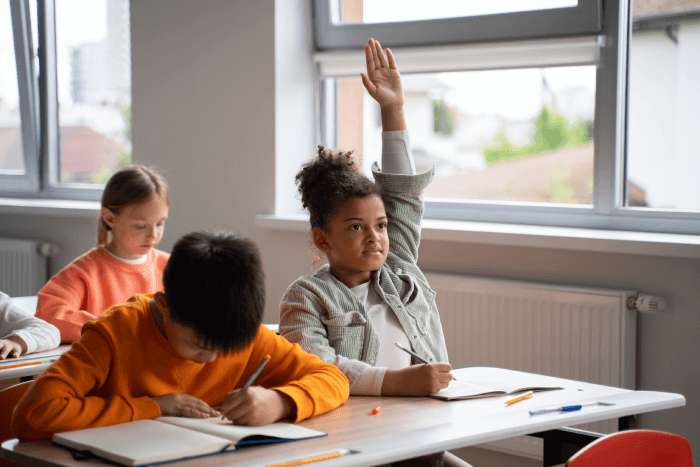
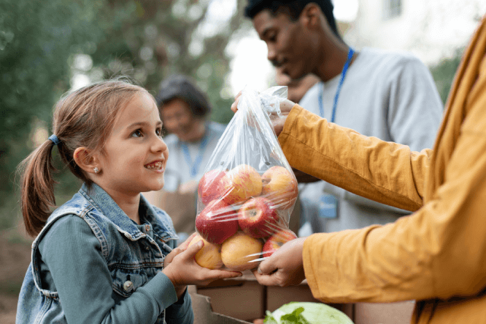
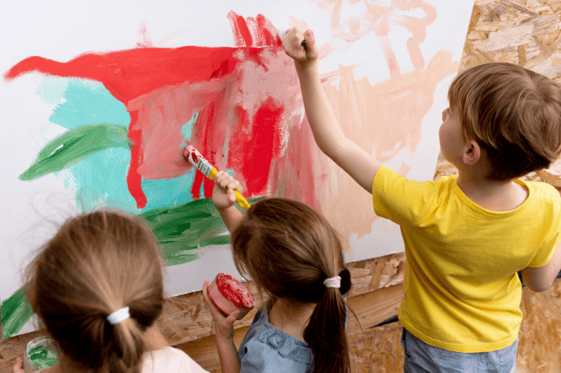

Nossos Projetos
Conheça algumas das ações que fazem parte da nossa missão de levar educação, alegria e esperança para crianças em situação de vulnerabilidade social.
📚 Educação para o Amanhã
O projeto Educação para o Amanhã oferece reforço escolar gratuito, aulas de informática e oficinas de leitura. Nosso objetivo é reduzir a evasão escolar e promover o aprendizado de forma divertida e inclusiva.
+150 crianças🍎 Alimentar com Amor
O projeto Alimentar com Amor garante refeições diárias saudáveis a crianças em situação de vulnerabilidade. Além da alimentação, promovemos educação nutricional e apoio às famílias.
+300 refeições semanais🎨 Arte que Transforma
No projeto Arte que Transforma, as crianças participam de oficinas de música, pintura e teatro. Acreditamos que a arte é uma poderosa ferramenta para a expressão e o desenvolvimento emocional.
+100 oficinas em 2024Participe como Voluntário
Se você deseja fazer parte dessa transformação, junte-se a nós! Clique no botão abaixo para se cadastrar como voluntário e ajudar a espalhar sorrisos.
Quero Ser VoluntárioContribua com uma Doação
Suas doações tornam possível cada passo da nossa jornada. Com qualquer valor, você ajuda a manter nossas atividades e ampliar nosso impacto.
Fazer uma Doação